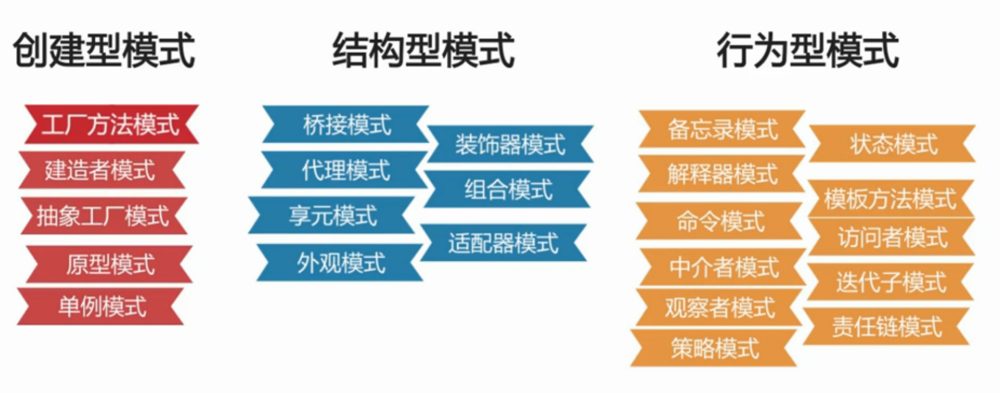

设计模式是什么
设计模式是基于场景的解决方案。
设计模式有23种，分为3类

单例模式
一个类有且仅有一个对象,并且自行实例化向整个系统提供
1. 三个要点与代码实现
- 必须只能有一个实例--------- A.这个类只提供私有的构造方法，限制对象在别的类中产生
- 必须自行创建实例------------B.在该类中创建一个静态私有对象（这里有两种创建方式：饿汉式VS懒汉式）
- 必须向整个系统提供这个实例------C.提供一个静态的公有方法用于创建/获取私有对象
2. 饿汉式PK懒汉式
开发中多用饿汉式,安全且快速
饿汉式在类加载时(对象还没有进内存)就创建实例, 第一次加载速度快;
懒汉式第一次使用时(类名调用方法)才进行实例化,第一次加载速度慢
饿汉式:空间换时间
懒汉式:时间换空间饿汉式线程安全;懒汉式存在线程风险
public static synchronized SingletonLazy getLazy(){ // 线程风险 - 导致创建两个对象 if(lazy == null) ---> Thread A ---> Thread B lazy = new SingletonLazy(); return lazy; }解决方案:
1、同步锁 3、静态内部类 2、双重校验锁 4、枚举
3. 单例模式优缺点
优点:
1、在内存中只有一个对象,节省内存空间
2、避免频繁的创建销毁对象,提高性能
3、避免对共享资源的多重占用
缺点:
1、扩展比较困难
2、如果实例化后的对象长期不利用,系统将默认为垃圾进行回收,造成对象状态丢失
4. 单例模式适用场景
- 创建对象时占用资源过多,但同时又需要用到该类对象
- 对系统内资源要求统一读写,如读写配置信息
- 当多个实例存在可能引起程序逻辑错误,如号码生成器